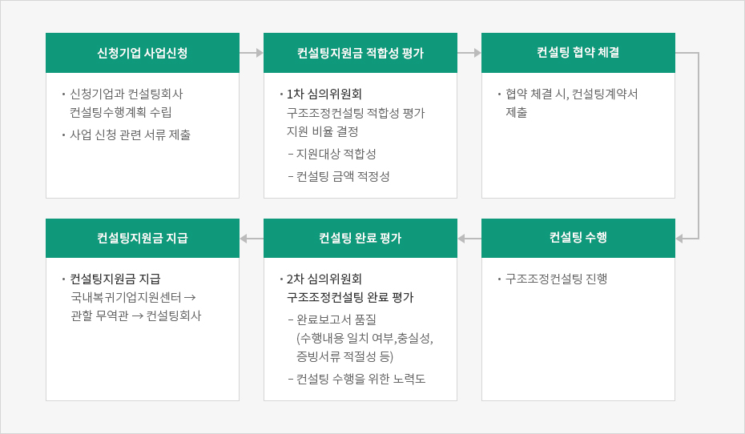

구조조정 컨설팅
- Home
- 국내복귀기업지원
- 사업소개
- 구조조정 컨설팅
지원대상
중국, 베트남, 미국, 일본, 인도네시아, 필리핀, 인도, 태국에 진출한 우리기업 중 아래 사항 중 어느 하나에 해당하는 기업
- 해외진출기업의 국내복귀 지원에 관한 법률에 따라, ‘국내복귀기업’으로 승인 신청 또는 선정된 기업
- 구조조정 절차를 진행 중이거나, 향후 이행 예정인 중소·중견기업 (소비성 서비스업 등 일부 업종 제외, 신청 국내 모기업이 존재해야 함)
- 구조조정모델 제안(청산, 매각, 양도, 축소 관련)
- 각 모델별 행정절차와 업무흐름 안내
- 구조조정비용 산출 및 최적화 모델 도출
- 축소대행
- 최적의 축소 전략 및 계획 수립
- 축소를 위한 실무, 행정업무 대행
- 축소 법무, 세무, 노무 서비스 등
- 청산대행
- 최적의 축소 전략 및 계획 수립
- 축소를 위한 실무, 행정업무 대행
- 실무 대행(동사회 소집, 채권정리 공고, 청산위원회 등)
- 행정 대행(심의비준, 등기취소 등)
- 청산 법무, 세무, 노무 등
- 매각 및 지분양도 대행
- 최적의 매각(또는 지분양도) 전략 및 계획 수립
- 매각(또는 지분양도)을 위한 실무, 행정업무 대행
- 매각(또는 지분양도) 법무, 세무, 노무서비스 등

컨설팅 회사 등록
등록요건 (등록 후 2년 경과 시 갱신 필요)
현지에 설립된 컨설팅회사로 법무법인, 회계법인 등 컨설팅서비스를 주업으로 등록된 회사 (한국 컨설팅서비스 회사의 현지지사 포함)필요서류
- KOTRA 구조조정컨설팅 회사 등록 신청서
- 법인등기부등본과 사업자등록증에 갈음하는 서류
- 청렴서약서, 윤리강령
- 컨설팅 보수표
신청방법
신청서 및 관련 서류 KOTRA 관할 무역관으로 제출진행절차



-
신청기업 사업신청
- 신청기업과 컨설팅회사 컨설팅수행계획 수립
- 사업 신청 관련 서류 제출
-
컨설팅지원금 적합성 평가
- 1차 심의위원회
구조조정컨설팅 적합성 평가 지원 비율 결정
- 지원대상 적합성
- 컨설팅 금액 적정성
- 1차 심의위원회
구조조정컨설팅 적합성 평가 지원 비율 결정
-
컨설팅 협약 체결
- 협약 체결 시, 컨설팅계약서 제출
-
컨설팅 수행
- 구조조정컨설팅 진행
-
컨설팅 완료 평가
- 2차 심의위원회 구조조정컨설팅 완료 평가
- 완료보고서 품질 (수행내용 일치 여부,충실성, 증빙서류 적절성 등)
- 컨설팅 수행을 위한 노력도
- 2차 심의위원회 구조조정컨설팅 완료 평가
-
컨설팅지원금 지급
- 컨설팅지원금 지급
국내복귀기업지원센터 → 관할 무역관 → 컨설팅회사
- 컨설팅지원금 지급
신청방법 및 문의처
신청기간
- 연중상시 (단, 컨설팅 용역 완료 이전에 신청해야 함)
- 연간 예산 한도 내에서 지원
신청방법
신청서 및 증빙서류를 KOTRA 관할 무역관으로 제출제출서류
- 구조조정컨설팅 지원사업 신청서 및 제반서류
- 컨설팅 계약에 관한 서류 (계약서, 컨설팅 수행계획서 등)
- 해외법인 관련 서류 (사업자등록증, 법인등기부등본 등)
- 국내모기업 관련 서류 (사업자등록증, 법인등기부등본 등)
※ 국내복귀기업 선정 과정에서 기제출된 서류는 중복제출 불요
문의처
KOTRA 유턴지원팀
- 전화번호 : 02-3460-3243
- 이메일 : lyn@kotra.or.kr